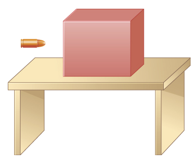

D6.X Problems#
Problem D6.1
The figure below shows a bullet of mass 200.0 g traveling horizontally towards the east with speed 400.0 m/s, which strikes a block of mass 1.5 kg that is initially at rest on a frictionless table.
After striking the block, the bullet is embedded in the block and the block and the bullet move together as one unit, while heat is generated between the bullet and the block due to friction.
What is the magnitude and direction of the velocity of the block/bullet combination immediately after the impact?
What is the magnitude and direction of the impulse by the block on the bullet?
What is the magnitude and direction of the impulse from the bullet on the block?
If it took 3.00 ms for the bullet to change the speed from 400.0 m/s to the final speed after impact, what is the average force between the block and the bullet during this time?
This problem is a slightly modified version from OpenStax. Access for free here
# DIY Cell
Show code cell source
%reset -f
import sympy as sp
mA = 2.000e-3
vA1 = 400.0 #let +x be direction of bullet motion
mB = 1.5
vB1 = 0.0 #block is at rest
#due to heat, kinetic energy is NOT conserved, but momentum is
#conservation of momentum: (P1 = P2)
# mA*vA1 + mB*mvB1 = (mA + mB)*v2
#unknown variable is final velocity
v2 = sp.Symbol('v2')
P1 = mA*vA1 + mB*vB1
P2 = (mA + mB)*v2
eq = P2 - P1
sol = sp.solve(eq,v2)
answer = "{:.1e}".format(float(sol[0]))
print('Final speed of bullet+block system is '+answer+' m/s')
Show code cell output
Final speed of bullet+block system is 5.3e-01 m/s
Problem D6.2
A 4.5 kg puffer fish expands to 40.0% of its mass by taking in water. When the puffer fish is threatened, it releases the water toward the threat to move quickly forward. What is the ratio of the speed of the puffer fish forward to the speed of the expelled water backwards?
This problem is a slightly modified version from OpenStax. Access for free here
# DIY Cell
Show code cell source
%reset -f
import sympy as sp
import numpy as np
mA = 4.5
vA1 = 0.0
mB = 0.400*mA
vB1 = 0.0
#conservation of momentum: (P1 = P2)
# mA*vA1 + mB*vB1 = mA*vA2 + mB*vB2
#unknown variables are final speeds and their ratio
vA2,vB2 = sp.symbols('vA2,vB2')
P1 = mA*vA1 + mB*vB1
P2 = mA*vA2 + mB*vB2
eq = P2 - P1
sol = sp.solve(eq,vA2,vB2)
vA2 = sol[0][1]
vB2 = sol[0][0]
ratio = np.abs(vA2/vB2)
answer = "{:.1e}".format(ratio)
print('Ratio: '+answer)
Show code cell output
Ratio: 2.5e+0
Problem D6.3
In an elastic collision, a 400.0 kg bumper car collides directly from behind with a second, identical bumper car that is traveling in the same direction. The initial speed of the leading bumper car is 5.60 m/s and that of the trailing car is 6.00 m/s. Assuming that the mass of the drivers is much, much less than that of the bumper cars, what are their final speeds?
This problem is a slightly modified version from OpenStax. Access for free here
# DIY Cell
%reset -f
import sympy as sp
import numpy as np
mA = 400.0
vA1 = 6.00
mB = 400.0
vB1 = 5.60
# both final speeds are unknown, so we have two unknowns
# elastic collision so kinetic energy is also conserved (together with momentum)
#conservation of momentum: (P1 = P2)
# mA*vA1 + mB*vB1 = mA*vA2 + mB*vB2
#unknown variables are final speeds
vA2,vB2 = sp.symbols('vA2,vB2')
#momentum
P1 = mA*vA1 + mB*vB1
P2 = mA*vA2 + mB*vB2
#kinetic energy
K1 = 0.5*mA*vA1**2 + 0.5*mB*vB1**2
K2 = 0.5*mA*vA2**2 + 0.5*mB*vB2**2
eq1 = P2 - P1
eq2 = K2 - K1
sol = sp.solve((eq1,eq2),(vA2,vB2))
vA2 = sol[0][0]
vB2= sol[0][1]
answer1 = "{:.2e}".format(vA2)
answer2 = "{:.2e}".format(vB2)
print('They simply swap speeds: '+answer1+' m/s and '+answer2+' m/s')
They simply swap speeds: 5.60e+0 m/s and 6.00e+0 m/s
Problem D6.4
An alpha particle (\(^{4}\)He) undergoes an elastic collision with a stationary uranium nucleus (\(^{235}\)U). What percent of the kinetic energy of the alpha particle is transferred to the uranium nucleus? Assume the collision is one-dimensional.
This problem is a slightly modified version from OpenStax. Access for free here
# DIY Cell
Show code cell source
%reset -f
import sympy as sp
import numpy as np
mA = 4. #mass in atomic mass units
mB = 235
vB1 = 0 # uranimum is initially at rest
# elastic collision so both momentum and kinetic energy are conserved.
#unknown variables
vA1,vA2,vB2 = sp.symbols('vA1,vA2,vB2')
#momentum
P1 = mA*vA1 + mB*vB1
P2 = mA*vA2 + mB*vB2
#kinetic energy
K1 = 0.5*mA*vA1**2 + 0.5*mB*vB1**2
K2 = 0.5*mA*vA2**2 + 0.5*mB*vB2**2
eq1 = P2 - P1
eq2 = K2 - K1
sol = sp.solve((eq1,eq2),(vA1,vA2,vB2))
print(sol)
vA1 = sol[0][0]
vA2= sol[0][1]
vB2 = sol[0][2]
# percent of alpha KE to U KE
k_alpha_i = 0.5*mA*(vA1**2)
k_U = 0.5*mB*vB2**2
percent = (k_U/k_alpha_i)*100
answer = "{:.0e}".format(percent)
print('Percent of initial alpha particle KE transferred to Uranium nuclei: '+answer+'%')
Show code cell output
[(29.875*vB2, -28.875*vB2, vB2)]
Percent of initial alpha particle KE transferred to Uranium nuclei: 7e+0%
#
Problem D6.5
A 20.0 kg child is coasting at 3.3 m/s over flat ground in a 4.0 kg wagon.
If the child drops a 1.0 kg ball out the back of the wagon, what is the final speed of the child and wagon?
If the child drops a 1.0kg ball out the back of the wagon so that the ball is at rest relative to the ground, what is the final speed of the child and wagon?
This problem is a slightly modified version from OpenStax. Access for free here
#DIY Cell
Show code cell source
%reset -f
import sympy as sp
import numpy as np
mA = 20.0 + 4.0
mB = 1.0
v1 = 3.3 #all three are moving together initially
# Conservation of momentum
#-------
# Part 1
#-------
#simply dropping the ball implies that the ball will move at the same horizontal speed as it was
#moving at when dropped as long as we ignore air drag.
vB2 = 3.3
#unknown variable
vA2 = sp.Symbol('vA2')
#momentum
P1 = (mA + mB)*v1 #the system is child,wagon, and ball all moving together
P2 = mA*vA2 + mB*vB2
eq =P2 - P1
sol = sp.solve(eq,vA2)
answer = "{:.1e}".format(sol[0])
print('There is no internal forces (or impact force) to change the motion of either ball or child_wagon: '+answer+'m/s')
#-------
# Part 2
#-------
#now the child is exerting a force on the ball and there is momentum transfer between the child and ball,
#but the net momentum of the system stays the same.
vB2 = 0
#unknown variable
vA2 = sp.Symbol('vA2')
#momentum
P1 = (mA + mB)*v1 #the system is child,wagon, and ball all moving together
P2 = mA*vA2 + mB*vB2
eq =P2 - P1
sol = sp.solve(eq,vA2)
answer = "{:.1e}".format(sol[0])
print('Final speed of child+wagon: '+answer+'m/s')
Show code cell output
There is no internal forces (or impact force) to change the motion of either ball or child_wagon: 3.3e+0m/s
Final speed of child+wagon: 3.4e+0m/s